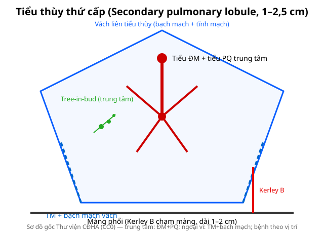
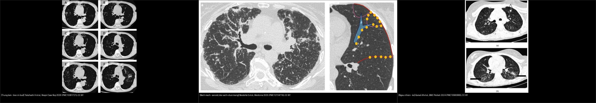
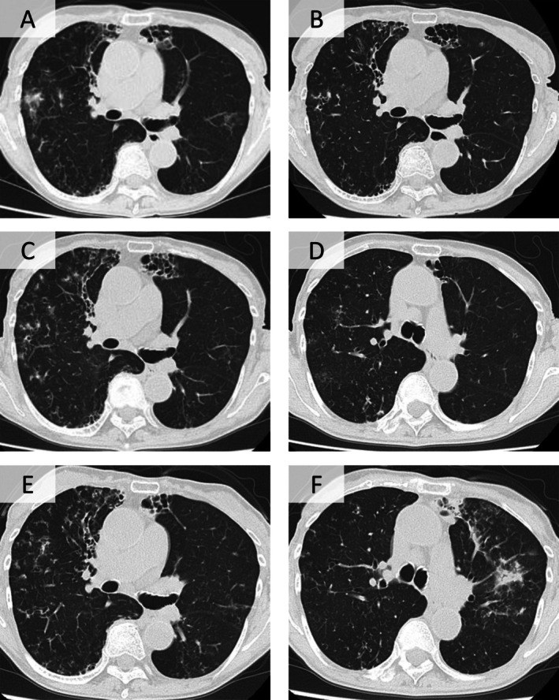
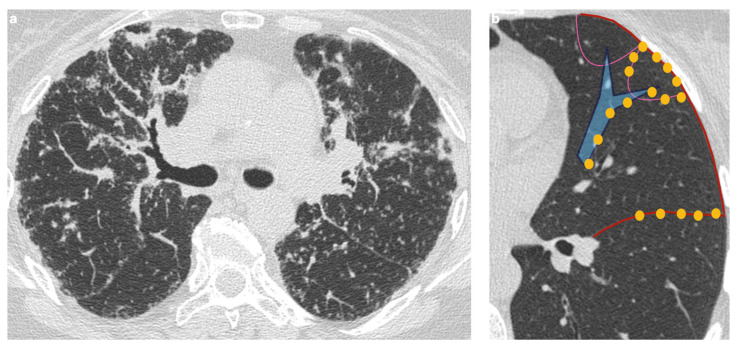
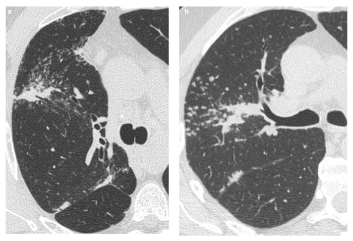
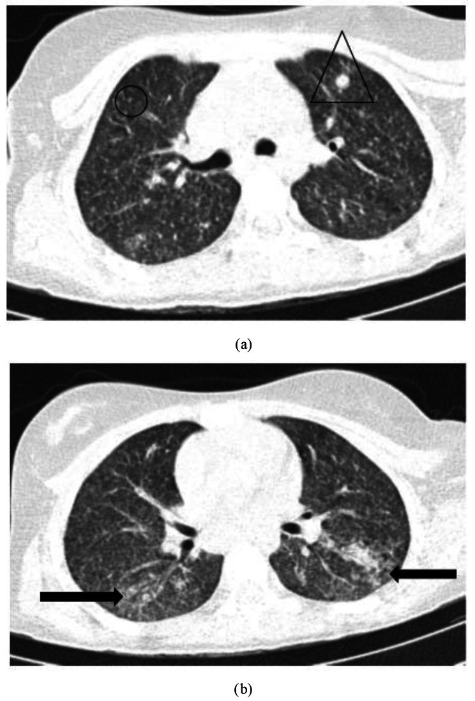

011 — Tiểu thùy phổi thứ cấp trên HRCT / Secondary pulmonary lobule
Tags: pattern:vi-cau-truc vung:phoi anatomy:phoi
Mức chắc chắn (certainty): tổng hợp y văn (literature synthesis) — nhóm tự biên từ y văn mở, chưa gắn ca nguyên văn đơn lẻ.
1. Tổng quan — đơn vị 1–2,5 cm quyết định mọi mẫu HRCT
- Tiểu thùy thứ cấp: đa diện 1–2,5 cm, vách liên tiểu thùy chứa tĩnh mạch + bạch mạch; trung tâm có tiểu động mạch + tiểu phế quản đi cùng nhau.
- TẠI SAO vị trí trong tiểu thùy quyết định tên bệnh: viêm/nấm theo đường thở → trung tâm (tree-in-bud); ứ bạch mạch/sarcoid → vách + dưới màng phổi (Kerley, galaxy); máu → ngẫu nhiên (kê, di căn).
- Kerley B = vách liên tiểu thùy ứ dịch/dày: dài 1–2 cm, vuông góc màng phổi, chạm màng ở đáy (bài 033).

Trung tâm: ĐM + PQ. Ngoại vi: TM + bạch mạch. Sơ đồ gốc Thư viện CĐHA, CC0.2. Gamut theo vị trí trong tiểu thùy
- Trung tâm (centrilobular): tree-in-bud (lao, MAC, hít), RB-ILD/DIP (hút thuốc), HP cấp — chừa màng phổi vài mm.
- Bạch mạch (perilymphatic): sarcoid (galaxy + hạch), lymphangitis K, bụi phổi — dọc vách + dưới màng + quanh rốn.
- Ngẫu nhiên (random): lao kê 1–3 mm, di căn máu, thuyên tắc NK — chạm màng phổi.
- Nang/kén: theo vách (LCH trên) vs ngẫu nhiên (LAM) — bài 050.

Đối chiếu cùng mặt phẳng HRCT: trái — tree-in-bud nốt trung tâm nối thành chùm quanh ĐM–PQ (chừa màng phổi); giữa — bạch mạch nốt dọc vách liên tiểu thùy + dưới màng phổi + quanh rốn (sarcoid); phải — ngẫu nhiên nốt 1–3 mm rải rác chạm màng phổi (kê). Nguồn: Takahashi H et al., Respirology Case Reports 2026 (PMC13381721) + Baratella E et al., Medicina 2025 (PMC12734719) + Kamali M et al., BMC Pediatrics 2024 (PMC10983680), CC BY. Ảnh ghép letterbox.3. Bảng tra cứu nhanh
| Vị trí trong SPL | Dấu HRCT | Bệnh điển hình | Chốt phân biệt |
|---|---|---|---|
| Trung tâm | Tree-in-bud, nốt mờ, chừa màng | Lao, MAC, hít, RB-ILD | Chừa màng vài mm + hút thuốc/lao |
| Vách/bạch mạch | Kerley, nốt vách, galaxy | Sarcoid, lymphangitis K, phù | Galaxy + hạch = sarcoid; Kerley + tim to = phù |
| Ngẫu nhiên | Nốt đều chạm màng | Kê, di căn máu, NK huyết | Đều 2 phổi + ổ nguyên phát |
| Nang | Kén ≤ 2 mm / tổ ong tầng | LAM/LCH vs UIP (bài 035/050) | Thành + phân bố (bài 050) |
4. Protocol HRCT đọc tiểu thùy
- Lát mỏng 1–1,5 mm + MIP 5–10 mm (nốt/vessel) + MinIP (bẫy khí) + prone (loại xẹp đáy).
- Đọc theo trình tự: phân bố (trên-dưới, trung tâm-ngoại vi) → trong SPL (trung tâm/vách/ngẫu nhiên) → kèm (hạch, màng phổi, tim).
5. Cạm bẫy
- Xẹp đáy giả kính mờ/nốt — prone xác nhận.
- Mạch cắt ngang giả nốt trung tâm — MIP + cuộn MPR xem cuống.
- Tuổi già dày vách nhẹ lan tỏa — đừng gọi xơ bệnh lý khi không có tổ ong/giãn PQ do kéo.
6. Tự lượng giá — Blind Quiz
Ca 1 — HRCT: nốt nhỏ nối thành chùm quanh ĐM–PQ, chừa màng phổi vài mm (bệnh nhân ho mạn + giãn phế quản).

- Hỏi: phân bố trong tiểu thùy? Dấu hiệu tên gọi? Ba nguyên nhân thường gặp?
Bấm để hiện đáp án
- Phân bố trung tâm (centrilobular): nốt nhỏ nối thành chùm dạng cành cây ra lá (tree-in-bud) quanh ĐM–PQ ở trung tâm tiểu thùy, chừa màng phổi vài mm.
- Nguyên nhân: lao, MAC/NTM, hít sặc/viêm phổi hít; ca này là Nocardia trên nền giãn phế quản.
- Nguồn: Takahashi H et al., Respirology Case Reports 2026, Fig. 1, PMC13381721, CC BY 4.0.
Ca 2 — HRCT: nốt mờ rải rác, tập trung DỌC VÁCH liên tiểu thùy + DƯỚI màng phổi + quanh rốn phổi (bệnh nhân trẻ, hạch rốn hai bên).

- Hỏi: phân bố trong tiểu thùy? Chẩn đoán? Dấu hiệu chốt kèm theo?
Bấm để hiện đáp án (findings + chẩn đoán)
- Findings: vi nốt phân bố BẠCH MẠCH — men theo vách liên tiểu thùy, dưới màng phổi và quanh bó mạch–phế quản (quanh rốn) (a); hình (b) chồng sơ đồ: nốt (chấm vàng) nằm dọc phế quản (đường xanh), vách liên tiểu thùy (đường đỏ).
- Chẩn đoán: sarcoidosis phổi — chốt bởi hạch rốn phổi hai bên đối xứng + phân bố bạch mạch; phân biệt lymphangitis K (một bên, dày vách + nốt), bụi phổi.
- Nguồn: Baratella E et al., Medicina 2025, Fig. 3, PMC12734719, CC BY 4.0.
Ca 3 — HRCT (a) bệnh nhân sarcoid và (b) bệnh nhân lao: cùng một dấu hiệu ở vùng nốt trung tâm.

- Hỏi: mô tả dấu hiệu (nốt lớn + các nốt vệ tinh)? Tên gọi? Vì sao quan trọng khi tầm soát K phổi?
Bấm để hiện đáp án (findings + chẩn đoán)
- Findings: nốt lớn trung tâm + chùm nốt vệ tinh nhỏ hợp lại → dấu "galaxy sign" (nhìn như thiên hà). Gặp ở sarcoid (a) và lao (b).
- Vì sao quan trọng: trong tầm soát K phổi, nốt đặc vùng trên + vệ tinh dễ bị đọc là u ác; galaxy sign là bắt chước lành tính (benign mimic) → tránh sinh thiết/mổ oan, đối chiếu hạch rốn + bối cảnh.
- Nguồn: Baratella E et al., Medicina 2025, Fig. 8, PMC12734719, CC BY 4.0.
Ca 4 — Trẻ 12 tuổi, HRCT: vô số nốt nhỏ đều hai phổi + đám đông đặc vá víu (bệnh nhân lao kê).

- Hỏi: nốt có phân bố gì (trung tâm/vách/ngẫu nhiên)? Chẩn đoán? Phân biệt với sarcoid ở điểm nào?
Bấm để hiện đáp án (findings + chẩn đoán)
- Findings: các vi nốt phân bố NGẪU NHIÊN rải khắp hai phổi (chạm màng phổi) + đám đông đặc vá víu (a,b) = lao kê (miliary TB).
- Chốt: ngẫu nhiên = chạm màng phổi, đều hai phổi, không ưu thế vách — khác sarcoid (dọc vách + dưới màng + quanh rốn); kê gợi ý lao kê/di căn máu.
- Nguồn: Kamali M et al., BMC Pediatrics 2024, Fig. 3, PMC10983680, CC BY 4.0.
Ca 5 — Ghép đối chiếu: bên nào là trung tâm, bên nào là bạch mạch, bên nào là ngẫu nhiên?
Bấm để hiện đáp án (findings + chẩn đoán)
- Trái — tree-in-bud: nốt trung tâm nối thành chùm (chừa màng). Giữa — bạch mạch: nốt dọc vách + dưới màng + quanh rốn (sarcoid). Phải — ngẫu nhiên: nốt đều rải rác chạm màng (kê).
- Chốt: xác định vị trí trong tiểu thùy là bước quyết định tên bệnh; luôn kèm phân bố trục trên–dưới và bối cảnh. Nguồn: Takahashi 2026 (PMC13381721) + Baratella 2025 (PMC12734719) + Kamali 2024 (PMC10983680), CC BY 4.0.
Ca 6 — Nhìn sơ đồ gốc, chỉ vị trí 4 tổn thương.
- Hỏi: tree-in-bud nằm đâu? Kerley B chạm đâu? Nốt bạch mạch dọc đâu? Kê ngẫu nhiên chạm gì?
Bấm để hiện đáp án
- Tree-in-bud: trung tâm (quanh ĐM-PQ). Kerley B: vách, chạm màng phổi. Bạch mạch: dọc vách + dưới màng. Kê: ngẫu nhiên, chạm màng.
Bài liên quan chéo
- 001 – Tổng quan hệ Ngực
- 021 – Đa nốt phổi (3 phân bố)
- 033 – Phù phổi & ARDS (Kerley B)
- 035 – Xơ mô kẽ UIP vs NSIP (vách xơ)
Không dùng để chẩn đoán độc lập khi chưa có người hướng dẫn.